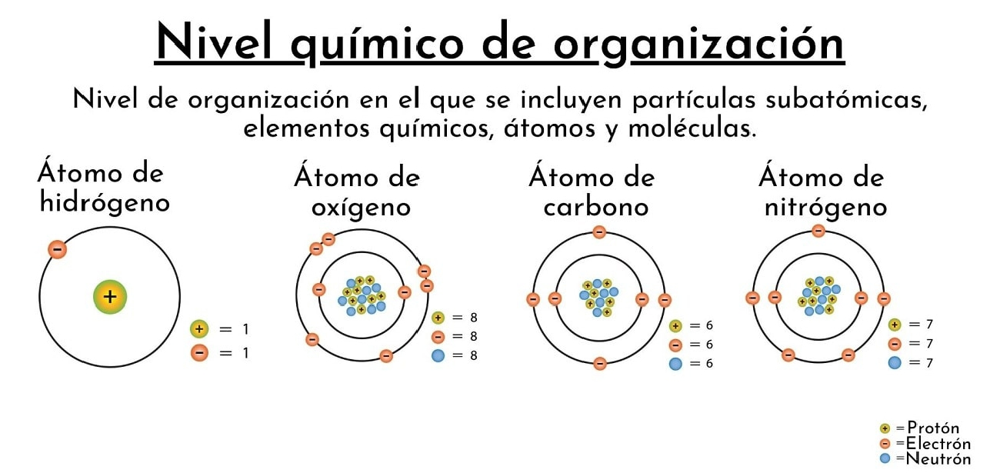
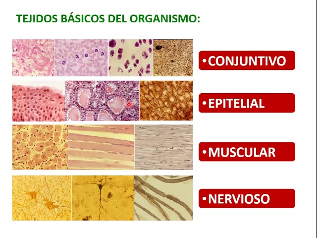
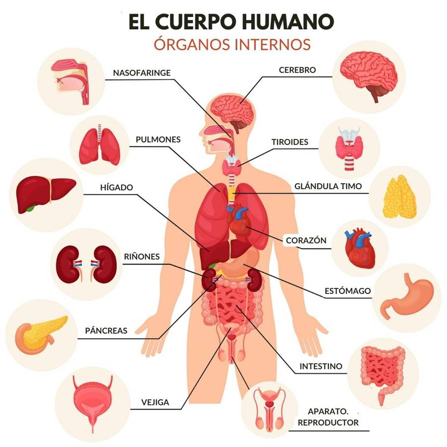

Para comprender la anatomía humana, es fundamental entender que el cuerpo no es una masa uniforme, sino una estructura jerárquica donde cada nivel superior depende de la integridad de los niveles inferiores.
Es la base de la vida. Incluye los átomos (como carbono, hidrógeno, oxígeno y nitrógeno) que se combinan para formar moléculas esenciales como el ADN, la glucosa y las proteínas. Sin estas interacciones bioquímicas, la estructura física no existiría. El salto de lo inorgánico a lo orgánico En el nivel químico, la clave no son solo los átomos, sino las biomoléculas. El cuerpo humano está compuesto principalmente por seis elementos (CHONPS),
que forman:
Proteínas:
Los ladrillos estructurales y funcionales (enzimas).Lípidos:
Forman las membranas de todas nuestras células.Carbohidratos:
La fuente de combustible inmediato.Ácidos Nucleicos:
El manual de instrucciones (ADN y ARN).
Las moléculas se combinan para formar la unidad básica, estructural y funcional de todo ser vivo: la célula. En el cuerpo humano existen células especializadas como las neuronas, las fibras musculares o los glóbulos rojos, cada una con una forma adaptada a su función.
La Especialización Celular
En el nivel celular, ocurre un fenómeno llamado diferenciación. Aunque casi todas tus células tienen el mismo ADN, se especializan: Una neurona desarrolla largas extensiones para transmitir electricidad. Un miocito (célula muscular) se llena de proteínas contráctiles para acortarse y generar fuerza.
Un tejido es un grupo de células similares que trabajan juntas para realizar una función específica. Existen cuatro tipos básicos:
- Epitelial: Cubre superficies corporales.
- Conectivo: Protege y soporta el cuerpo.
- Muscular: Produce movimiento.
- Nervioso: Transmite impulsos eléctricos.
Los Cuatro Pilares:
El Nivel Tisular Un tejido es más que un grupo de células; es una comunidad que comparte una matriz extracelular (sustancia que las rodea).Tejido Epitelial:
No solo es piel; también reviste el interior de tus pulmones y el tracto digestivo, actuando como barrera y filtro.Tejido Conectivo:
Es el más diverso. Incluye la sangre (tejido líquido), el hueso (tejido sólido) y la grasa (tejido adiposo).Tejido Muscular:
Se divide en esquelético (voluntario), cardíaco (corazón) y liso (órganos internos).Tejido Nervioso:
Especializado en la comunicación rápida mediante señales electroquímicas.
Cuando diferentes tipos de tejidos se unen, forman órganos. Los órganos tienen funciones específicas y formas reconocibles. Ejemplos incluyen el estómago (compuesto por tejido epitelial para secreción, muscular para movimiento y nervioso para coordinación).
El Concepto de Órgano y Sistema
Un error común es confundir "sistema" con "aparato", aunque a menudo se usan como sinónimos:Sistema:
Compuesto por órganos con tejidos muy similares (ej. el Sistema Nervioso o el Sistema Óseo).Aparato:
Compuesto por órganos con tejidos diversos que se agrupan para una función compleja (ej. el Aparato Digestivo, que incluye glándulas, músculos y membranas distintas).
Consiste en un grupo de órganos que colaboran para cumplir una función vital común. Por ejemplo, el sistema digestivo degrada y absorbe los alimentos.
Homeostasis:
El Objetivo Final Toda esta organización tiene un solo propósito: mantener la homeostasis. Este es el estado de equilibrio dinámico interno.Ejemplo:
Si tu temperatura sube, el sistema nervioso detecta el cambio, el sistema circulatorio dilata los vasos y el sistema tegumentario (la piel) produce sudor para enfriarte. Es una colaboración entre todos los niveles de organización.